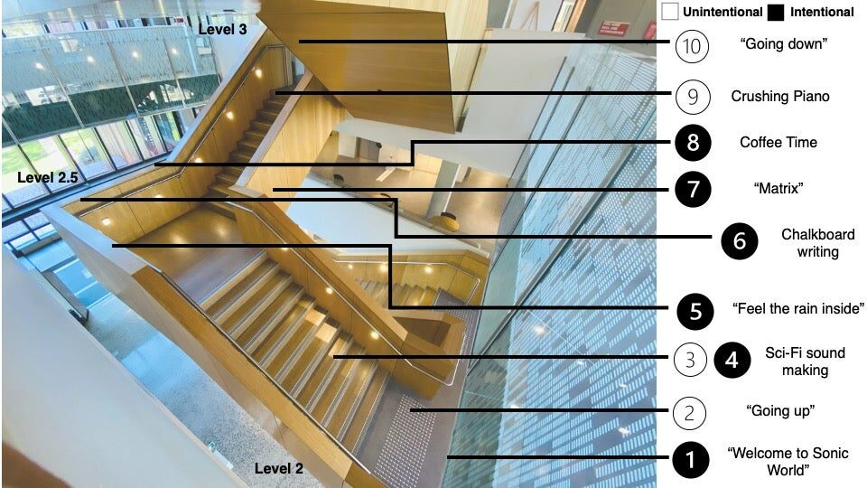
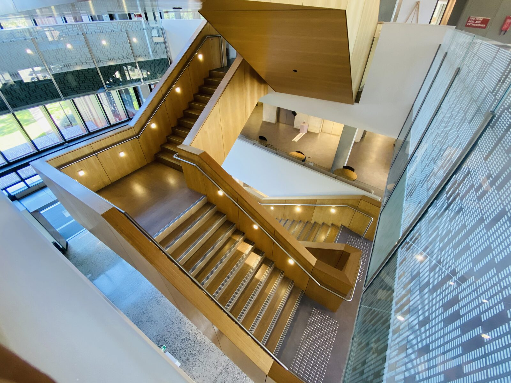
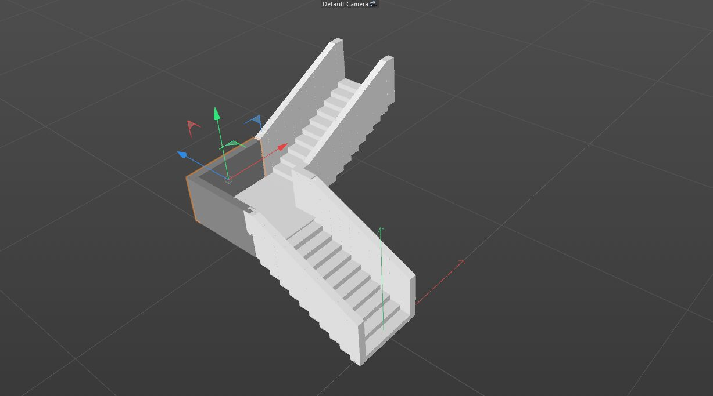
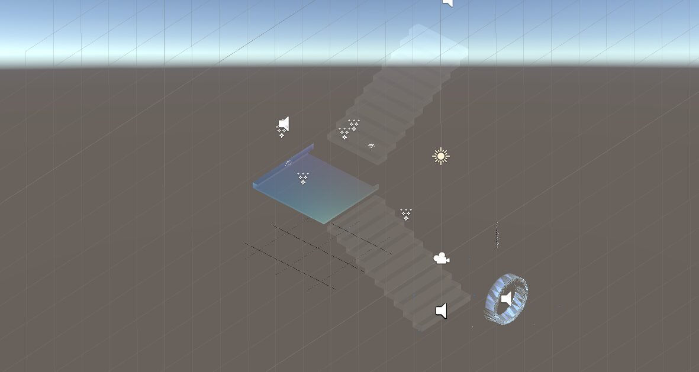
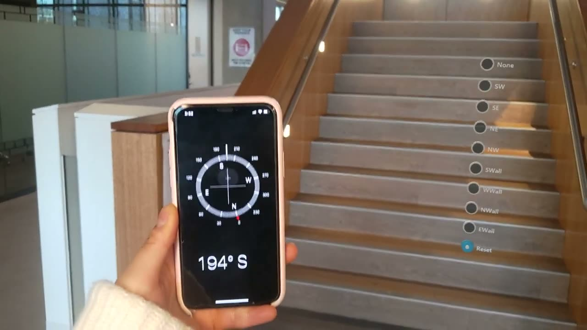
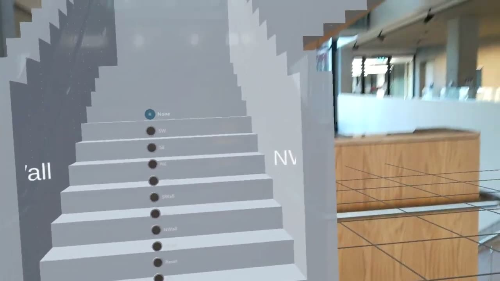
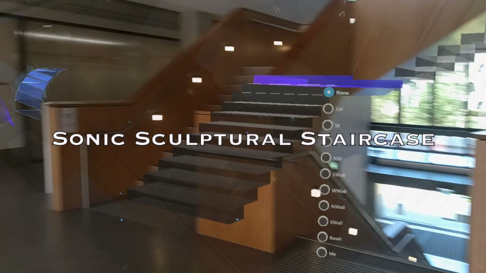

Sonic Sculptural Staircase in Head-Mounted Augmented Reality
Sonic Sculptural Staircase in Head-Mounted Augmented Reality
Yichen Wang1, Henry Gardner1, Matt Adcock2, Charles Martin1 (Project Lead)
1The Australian National University, 2Data 61, CSIRO
1.PubPub Link
https://nime.pubpub.org/pub/efzarmql/draft?access=cvqqgxy7
2. Conference Abstraction
The Sonic Sculptural Staircase is a head-mounted augmented-reality artwork that integrates sound, visuals and interaction to enhance the appreciation of a sculptural staircase and its surroundings. In particular, the work explored different combinations of sound, interaction and visuals to present an immersive experience. Ten different "interaction stations" are included to prompt the user’s engagement and to convey the meaning behind the staircase.
This work was realised using a Microsoft Hololens 2 AR headset and programmed in Unity. The Microsoft Mixed Reality Toolkit and World Locking Tool were used to design the location-specific sonic and visual interactions.
Our preliminary findings with users indicate that our sonic experience has a compelling sense of immersion when sound complements visual overlays, especially large visualisations that surround the users. These findings encourage us to pursue further studies including a formal user evaluation. We believe our exploration of the Sonic Sculptural Staircase could provide useful insights into how sonic interaction design can contribute to sculptural spaces and how new musical instruments can make use of head-mounted augmented reality.
3.Requirements
- equipment: This work was realised with the Microsoft Hololens 2 AR headset and programmed in Unity version 2019.3.7.f1. The Microsoft Mixed Reality Toolkit and World Locking Tool were used to design the location-specific sonic and visual interactions. To initialise the work, the related Unity project was deployed in the headset using Windows Visual Studio 2019. Prior to running the formal experience, the work needs to have a manual location set up using headset.
- space: This work is specifically designed for a sculptural staircase located in the Hanna Neumann building at the Australian National University.
- feasibility: Given that the work was designed as location-specific, we do not think it would be easy to reproduce it at a different location.
4.Program Description
The Sonic Sculptural Staircase is created as an augmentation of a staircase that bridges the two schools of Mathematics[1] and Computing at the Australian National University (ANU) with the aim of reflecting on its aesthetic context[2] [3]. The work was designed to be triggered by walking and gesturing within the staircase to provide related information through designed interaction stations as shown in Image 1. These stations enable the user to have different views of the building’s interior with sonic information mapped to the real-world context.


In particular, sound is exploited as the main information channel to covey meaning during this interactive experience. Our sound sources are categorised in three themes: 1) mathematics-related sounds (e.g., chalkboard sketching sound) 2) computer science-related sounds: (e.g., keyboard typing sound) 3) sounds appearing in the building that map the aesthetic context or the occupants working environment (e.g., swipe-card sound).


Sculpture Staircase at Hanna Neumann building
The implementation mainly contains three steps. First, the real-world staircase was modeled in Cinema4D [4] based on its physical structure (Image 2 ) and used as holograms. The 3D staircase model is composed of a set of child holograms as shown in Image 3. Second, the staircase model was manually aligned with the physical staircase using WLT[5] (Video 3 & Video 2). Third, sound sources, visuals and interactions were integrated with specific child holograms to realise the ten different sonic interaction stations in Unity (Image 4). Hand interactions are achieved with MRTK while presence interactions use collision detection scripts written in C# in the Unity back-end environment.


Staircase Model in Cinema4D


Sonic Sculptural Staircase Development in Unity

▶Aligning Staircase Model in Reality using WLT (https://youtu.be/qxJ9gFjoVBs)

▶Staircase Model Mapped with Physical Staircase (https://youtu.be/LUOdZrxvUxs)
More details of this project can be found at: https://yichenwangs.github.io/portfolio/projects/proj-1.html.
5. Media

▶Sonic Sculptural Staircase demo (http://doi.org/10.5281/zenodo.4448443)
6. ACKNOWLEDGEMENTS
We would like to thank the technical support provided by Stuart Anderson of Data61, CSIRO throughout this project.
Citations
- ↩Mathematical Science Institute, A., College of Science. (2019). Keeping Hanna Neumann’s legacy alive: the new HN building. Retrieved from https://maths.anu.edu.au/news-events/news/keeping-hanna-neumann’s-legacy-alive-new-hn-building
- ↩News, W. A. (2019). The Coded Building - Hanna Neumann Building, Australian National University. Retrieved from https://www.worldarchitecturenews.com/article/1588290/coded-building-hanna-neumann-building-australian-national-university
- ↩ANU Computer Science & Mathematical Sciences Institute. (n.d.). Retrieved from http://clarkekeller.com.au/projects/learning/anu-computer-science-mathematical-sciences-in/
- ↩Cinema 4D Software. (2020). Cinema 4 Overview. MAXON Computer. Retrieved from https://www.maxon.net/en/cinema-4d
- ↩Microsoft. (2021). WorldLockingTool for Unity. GitHub. Retrieved from https://microsoft.github.io/MixedReality-WorldLockingTools-Unity/README.html